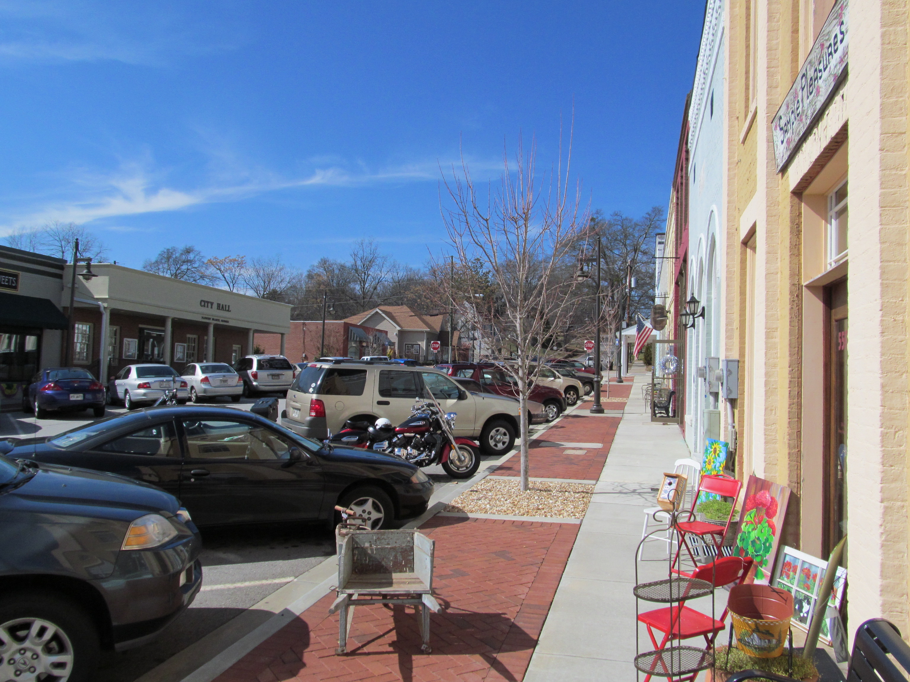

About Flowery Branch
Source: Faolin42
Income and Earnings4
| City | Median Household Income | Margin of Error |
|---|---|---|
| Flowery Branch, GA | $93,684 | ± $21,042 |
| Georgia | $72,837 | ± $640 |
| United States | $74,755 | ± $148 |
Source: Faolin42
| City | Median Household Income | Margin of Error |
|---|---|---|
| Flowery Branch, GA | $93,684 | ± $21,042 |
| Georgia | $72,837 | ± $640 |
| United States | $74,755 | ± $148 |